Sprint
Campeón sudamericano
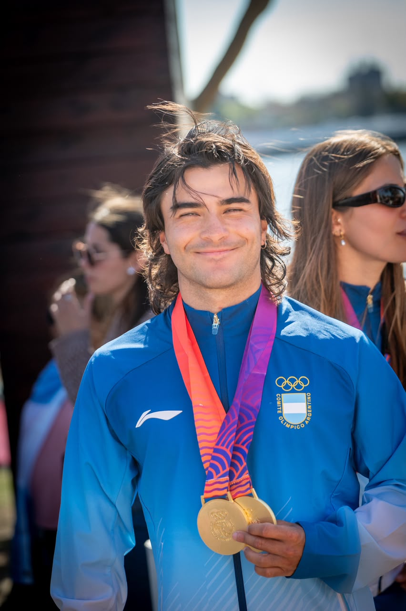
SANTINO BASALDELLA / ATLETA ARGENTINO
La pasión es el punto de partida.
El mundo, la próxima línea de largada.
DOBLE ORO · JUEGOS ODESUR 2026
Sprint y técnica. Clasificado a PASA Lima 2027.
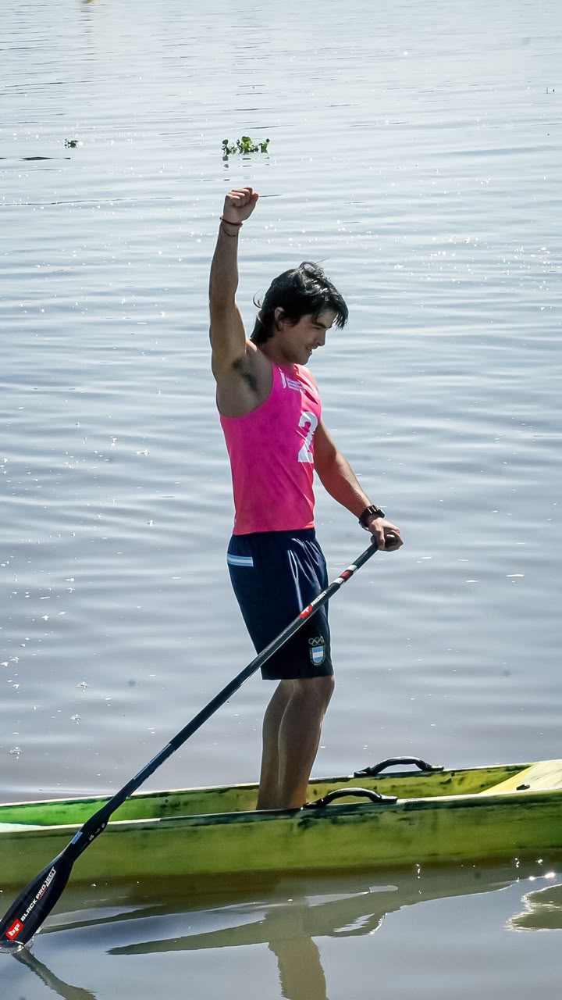
ÚLTIMOS LOGROS
Doble campeón sudamericano en los Juegos ODESUR 2026. Un resultado que marca su camino y una nueva clasificación para seguir representando a Argentina.
Campeón sudamericano
Campeón sudamericano
Un nuevo objetivo internacional. El próximo capítulo ya tiene destino.
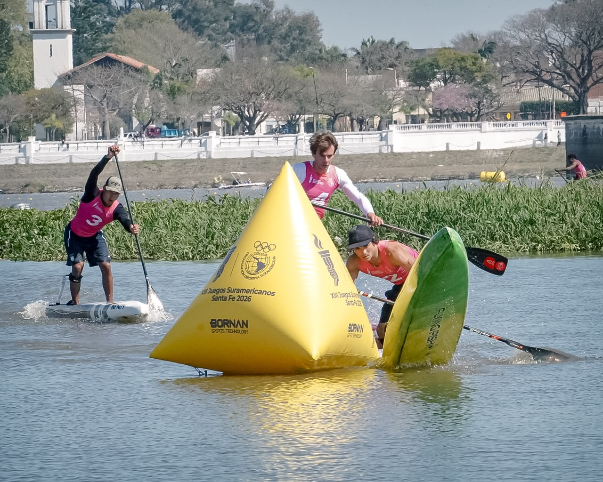
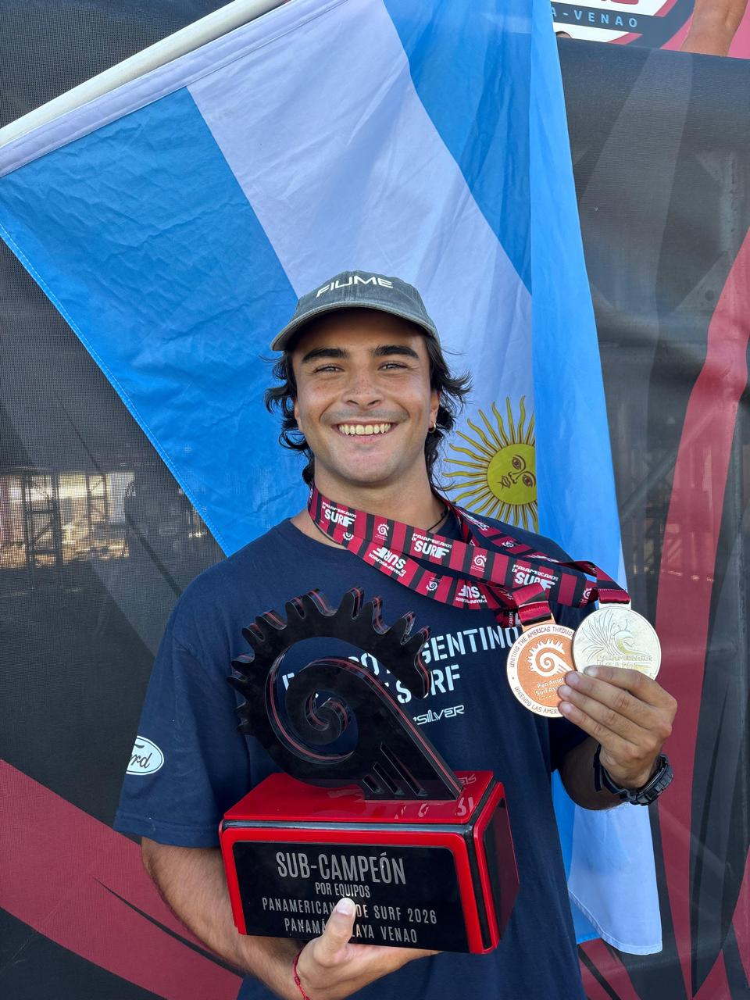
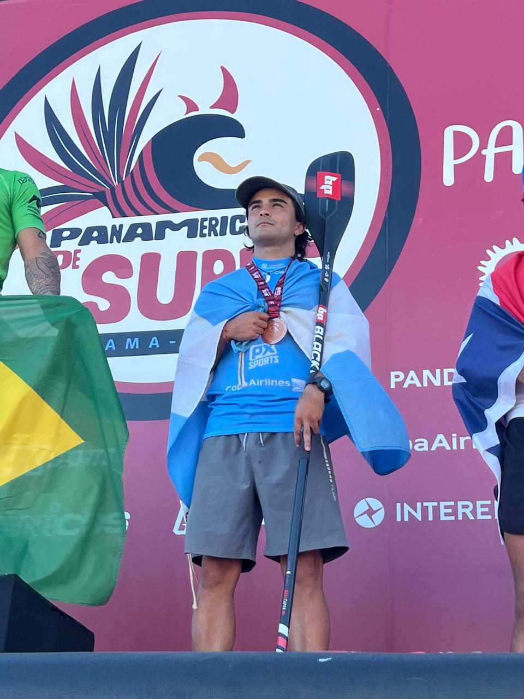
EL RECORRIDO
Representando a Argentina desde 2022. Medallista en los Juegos Panamericanos Santiago 2023 con 17 años, doble oro en ODESUR 2026, cinco títulos argentinos consecutivos y cinco mundiales disputados.
Campeón sudamericano · 2026
Campeón sudamericano · 2026
Playa Venao, Panamá · 2026
Colombia · 2025
El Salvador · 2024
Punta Rocas, Perú · 2024
Austria · Technical Race · 2024
Colombia · 2024
Santiago, Chile · 2023
Santa Marta, Colombia · 2023
11.º puesto
12.º puesto
Participación mundialista
8.º puesto
Clasificación a los Juegos Panamericanos Santiago 2023
Austria · Technical Race · 2024
Italia · 2024 · Top 9
Italia · 2024
España · 2024
El Salvador · 2024
El Salvador · 2025
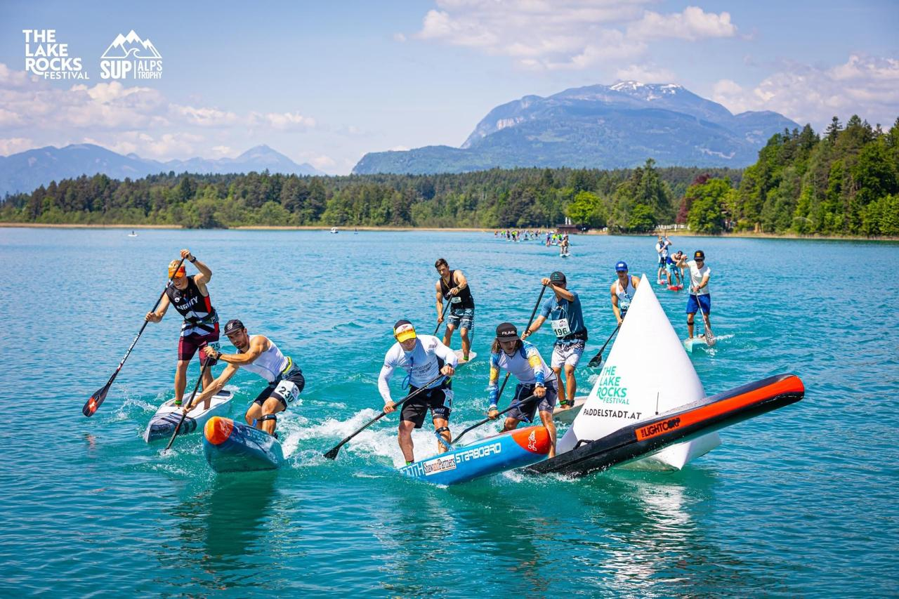
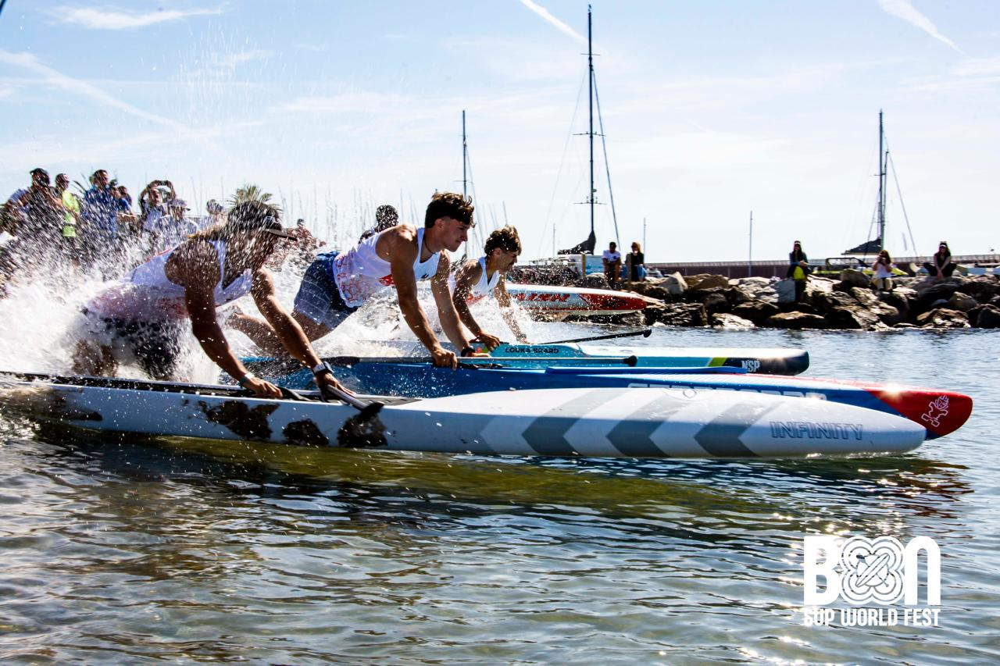
2022 · 2023 · 2024 · 2025 · 2026
Premio Centenario del Comité Olímpico Argentino
Categoría Surf
Colombia · 2024 y 2025
Santiago 2023 · Medalla de bronce
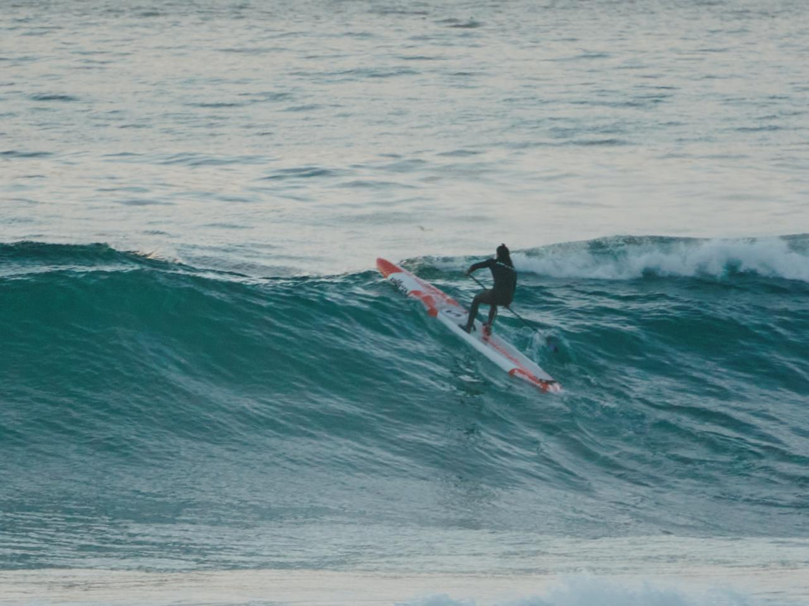
MÁS ALLÁ DE LA CARRERA
El agua no es solamente donde compito. Es donde aprendo, exploro y encuentro nuevas maneras de ir un poco más allá.
SUP Race, windsurf, windfoil, foil, SUP foil y surf. Distintas disciplinas. Una misma conexión.
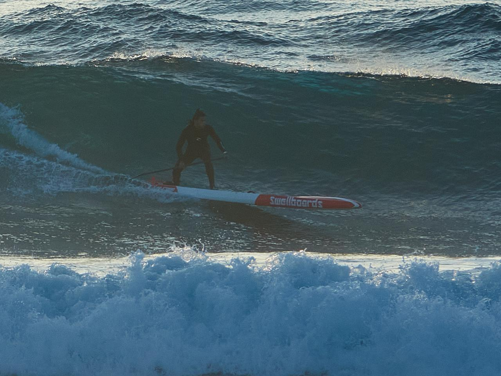
LO QUE VIENE, LO HACEMOS JUNTOS
Dos oros en ODESUR y la clasificación a PASA Lima 2027 abren un nuevo capítulo. Busco marcas que compartan mi manera de vivir el deporte para construir lo que viene juntos.
Presencia en competencias y entrenamientos, con productos en situaciones reales.
La preparación, los viajes y la vida en el agua, contados por quien los vive.
Experiencias compartidas y una colaboración que crece con el recorrido deportivo.
MARCAS QUE YA ME ACOMPAÑAN
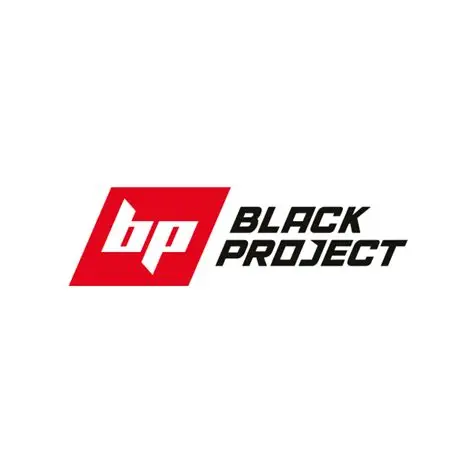
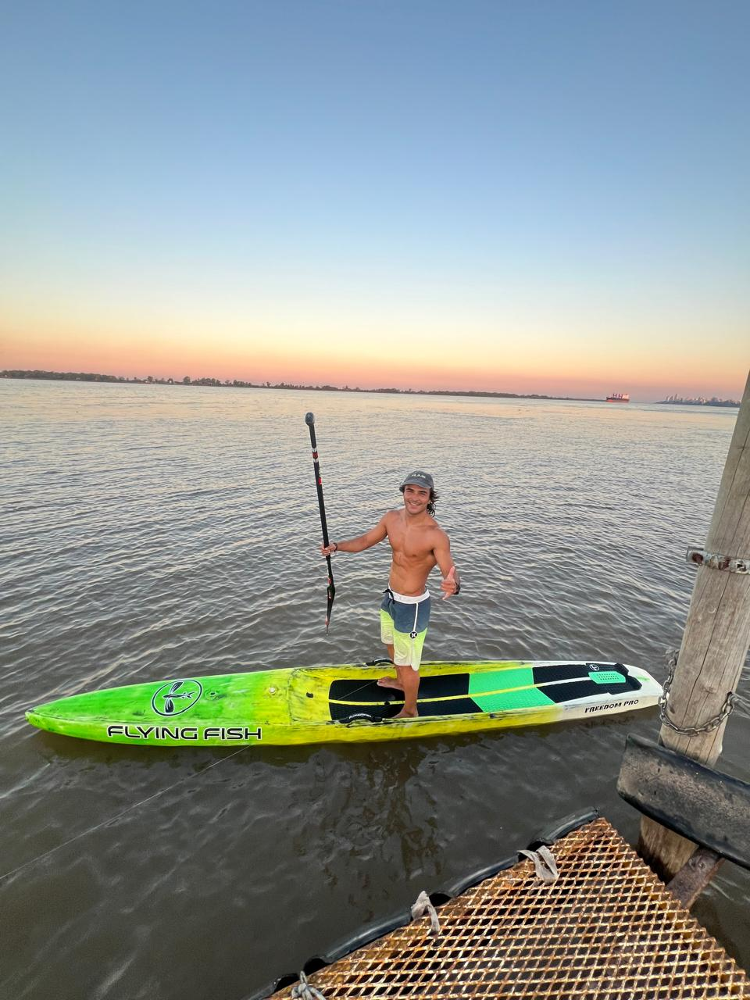